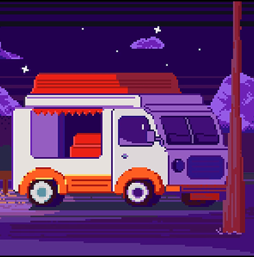

Фритрек и нулевой спринт: Подготовка к работе

началоЭто было самое начало пути. На этом этапе важно было проникнуться основами и настроиться на учёбу. И, возможно, подумать, как новые знания могут повлиять на ваше будущее.
Всё казалось новым: редактор, терминал, первые команды. Решил двигаться маленькими шагами — и первый работающий сайт придал уверенности.